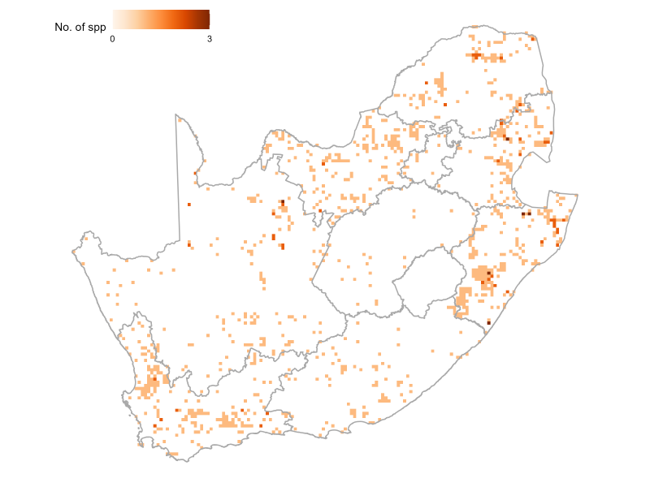
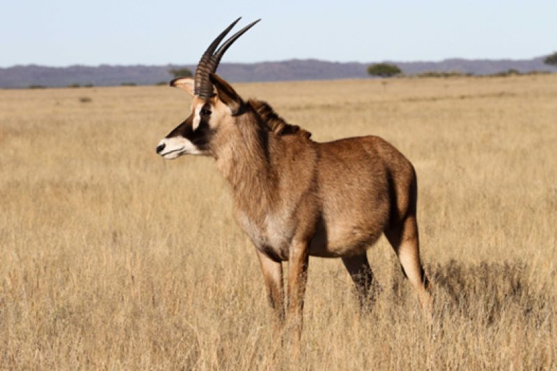
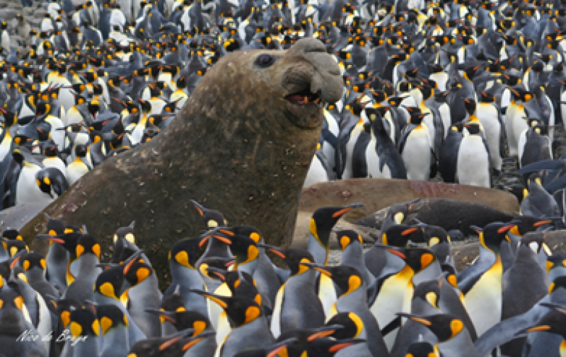
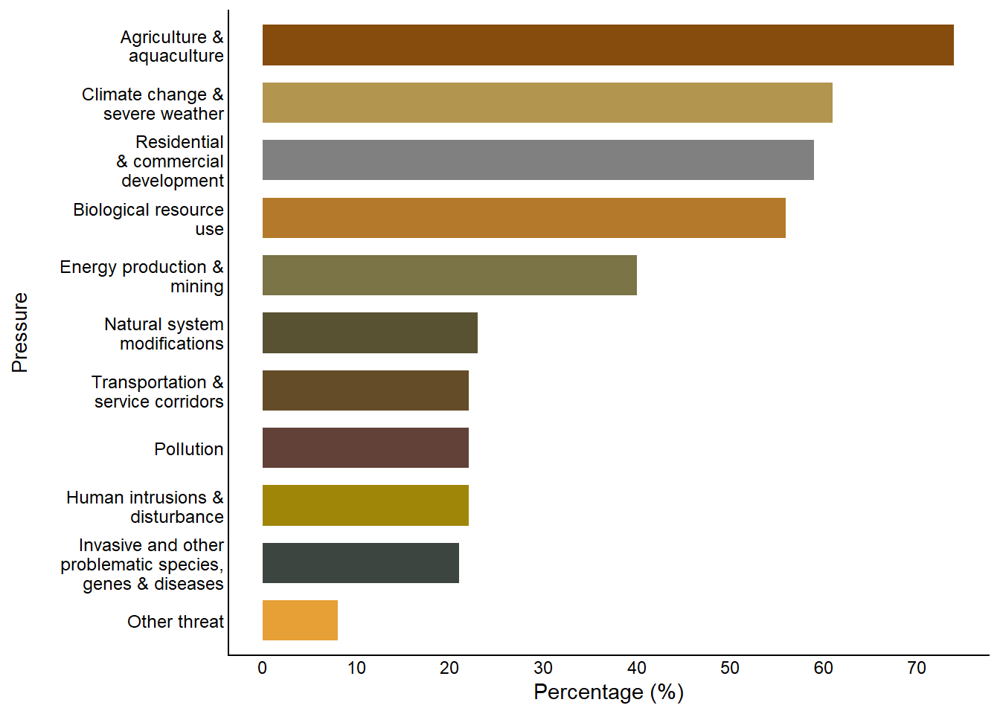
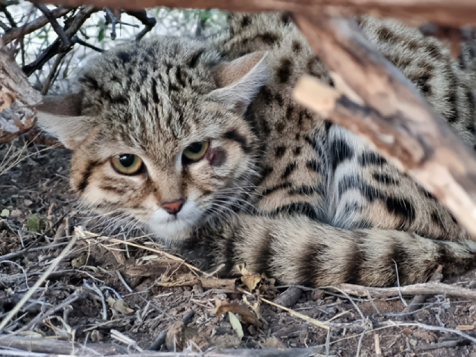
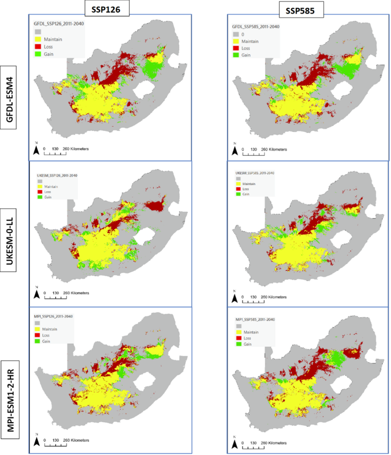

![]()


20%
of 336 taxa assessed are
Threatened
of 336 taxa assessed are
Threatened
56%
of 268 assessed taxa are
Well Protected
of 268 assessed taxa are
Well Protected
3%
of 268 assessed taxa are considered
Not-protected
of 268 assessed taxa are considered
Not-protected
Key findings
A total of 336 mammals have been evaluated, and 67 species are endemic to the assessment region of South Africa, Eswatini and Lesotho.
Nearly 20% (67) of assessed mammals are threatened with extinction, with another 12% (39) assessed as Near Threatened.
For South Africa’s endemic mammals, 42% (28) are threatened with extinction, placing full responsibility for their protection on the country.
Mammals are becoming increasingly threatened with extinction, with 11 species uplisted to higher threat categories, while three species were downlisted due to showing some improvement in status.
The main pressures driving change in threat status are habitat loss and degradation due to agricultural and urban expansion, climate change and extreme weather conditions, as well as over-exploitation and poaching.
A large proportion (56%) of mammals are Well Protected within the South African protected areas network; however, 25% of mammals are Poorly Protected or Not Protected, and need intervention to increase their protection level.
Threat status
South Africa’s most recent red list update indicates that of the 336 mammals that occur in the country, 67 are threatened with extinction. Threatened mammals are concentrated mainly in the moist eastern section of South Africa, the area that has seen the highest rates of habitat loss (Figure 1). Almost 20% of mammal species fall within a threatened category (VU, EN or CR), 12% of species are Near Threatened, while close to 70% are Least Concern (Figure 2). It is concerning that around 7% of mammals are listed as Data Deficient, with not enough information available to assign a Red List category. Overall, there were 14 genuine changes threat status in this revision. Eleven species were uplisted to a higher threat category, while only three were downlisted. South Africa’s larger wildlife species face varying levels of threat, with national conservation statuses ranging from Least Concern to Endangered (See page on status of selected wildlife species in South Africa).

| Taxon | Extinct | Critically Endangered | Endangered | Vulnerable | Near Threatened | Data Deficient | Least Concern | Total |
|---|---|---|---|---|---|---|---|---|
| Overall mammals | 2 | 5 | 22 | 40 | 39 | 24 | 204 | 336 |
| Endemic mammals | 2 | 3 | 10 | 15 | 4 | 5 | 28 | 67 |
Trends – the Red List Index
The trend in species status over time was measured using a global standard indicator, the IUCN Red List Index (RLI) of species1. The RLI is calculated for specific taxonomic groups based on genuine changes in Red List status over time. The RLI value ranges from 0 to 1. At a value of 1, all species are at low risk of extinction (Least Concern), while a value of 0 indicates that all species are extinct. The Red List Index of mammals was calculated for all mammal taxa that have been reassessed (n = 336). The Mammal RLI shows a declining trend from 2016, meaning that species are moving closer to extinction (Figure 3). Further, the mammal RLI is below the national average RLI, meaning mammals are doing worse then the average taxonomic group in South Africa. This is due to eleven species being uplisted to higher categories of threat (Table 2). Fortunately, there are three species that showed improvement in their threat status Box 1.

| Taxon | Change in status (2015 to 2025) | Direction of change | Reason for change |
|---|---|---|---|
| Lesueur’s hairy bat (Cistugo lesueuri)* | LC to VU | Uplisted | A declining number of mature individuals and emerging threats (renewable energy development) projected to affect AOO. |
| African straw-colored fruit bat (Eidolon helvum)* | LC to NT | Uplisted | There are <1,000 mature individuals and the impact of emerging threats (wind turbines and climate change). |
| Large-eared free-tailed bat (Otomops martiensseni) | LC to NT | Uplisted | There are <1,000 mature individuals and the impact of climate change and wind turbines. |
| Damara horseshoe bat (Rhinolophus damarensis) | LC to VU | Uplisted | Suspected population reduction by 30% due to mining activities, renewable energy development, and climate change. |
| Dent’s horseshoe bat (Rhinolophus denti) | NT to VU | Uplisted | There are <1,000 mature individuals and the population is threatened by renewable energy development and closure of old mines. |
| Thick-tailed bushbaby (Otolemur crassicaudatus) | LC to NT | Uplisted | Ongoing loss and degradation of its habitat. Two rapidly increasing threats are from the building of linear infrastructure and killings by domestic dogs. |
| Namaqua dune mole-rat (Bathyergus janetta) | LC to EN | Uplisted | Reduction in population numbers due to climate change and habitat destruction (overgrazing). |
| African shaggy rat (previously African marsh rat) (Dasymys incomtus)* | NT to VU | Uplisted | Population declines due to land transformation and climate change. |
| Laminate vlei rat (Otomys laminatus)* | NT to VU | Uplisted | There are <1,000 mature individuals; a limited area of available habitat <2,000 km2 AOO and ongoing and projected decline in habitat due to agricultural expansion, human settlement sprawl, mining, overgrazing and climate change. |
| Woosnam’s desert rat (Zelotomys woosnami) | LC to NT | Uplisted | Declining habitat due to construction of solar farms, mining, and climate change. |
| Aardvark (Orycteropus afer) | LC to NT | Uplisted | A population reduction is inferred based on a decline in its overall distribution and habitat quality due to climate change & climate-change related droughts that have impacted insect prey availability. |
Mammals that have increased their threat status are spread throughout South Africa (Figure 4). With the exception of the aardvark (Orycteropus afer), all the other mammals experiencing increases in threats are small mammals that are declining due to ongoing habitat loss and degradation as well as due to the construction of renewable energy infrastructure (Table 2). Five of the eleven threatened species are bats (Table 2), whose most severe threat is population decline due to mortalities caused by collisions with wind turbines.

NoteBox 1. Improvement in threat status of three species

© Cliff and Suretha Dorse
Hartmann’s mountain zebra was downlisted from Vulnerable to Near Threatened
Hartmann’s mountain zebra (Equus zebra hartmannae) naturally occurs in the north-west portions of the Northern Cape Province in South Africa, where they are currently established in three conservation areas: Richtersveld National Park, Augrabies Falls National Park, and Goegap Provincial Nature Reserve. The subspecies has also been introduced outside of their natural distribution range in the Western Cape, Eastern Cape, North West, Free State and KwaZulu-Natal provinces. The subspecies has been downlisted from Vulnerable D1 to Near Threatened D1 due to a genuine increase in population numbers, with the current mature population within the natural distribution range estimated at least 1 230 mature individuals (compared to fewer than 1 000 estimated in 2016), exceeding the threshold for the Vulnerable D1 criterion. This population growth is evident in formally protected areas such as Goegap Nature Reserve, which more than tripled from 25 individuals in 2004 to 83 in 2022; and Augrabies Falls National Park, which increased from 8 individuals in 1996 to 208 in 2016. Private subpopulations in the Northern Cape are also contributing significantly with an estimated 960 to 1 425 wild individuals. The population size remains small and reliant on active management to remain viable, with increasing drought frequencies due to climate change posing an ongoing threat that requires continued management interventions.

© Cliff and Suretha Dorse
The roan antelope has been downlisted from Endangered to Vulnerable.
The roan antelope (Hippotragus equinus) naturally occurs in the Limpopo (and marginally in Mpumalanga) bushveld areas through to open savannahs in certain areas of North West, Northern Cape and Free State provinces within South Africa. The species has been downlisted from Endangered to Vulnerable because the minimum confirmed wild mature population within the natural range has increased from less than 250 individuals to less than 1 000 individuals (currently estimated at 516-602 mature individuals from a total of 860 individuals). This improvement is primarily due the role that privately owned game farms are playing, as 77% of the total estimated population occurs on private land. While the overall population estimate has increased, roan antelope numbers in state-owned protected areas have declined from 333 individuals across nine protected areas in 2016 to just 197 individuals in eight protected areas in 2024. This decline is primarily attributed to poor habitat management due to insufficient resources (such as funding and human capacity), combined with ecological factors including habitat degradation from high densities of competing herbivores like elephants and other large mammals, increased predation pressure, and the species’ sensitivity to changes in grass height and composition (essential for both foraging and concealing their young).

© Nico de Bruyn
The southern elephant seal has been downlisted from Near Threatened to Least Concern.
The southern elephant seal (Mirounga leonina) breeds exclusively on Marion Island and Prince Edward Island within South Africa’s assessment region, with vagrant individuals occasionally spotted along the South African coastline. The species was downlisted from Near Threatened to Least Concern because the Marion Island population has shown sustained recovery since the mid-1990s, with pup production increasing by 47% between 1997 and 2023 (from 421 to 972 pups). Over the past four generations (1986-2023), the population has increased by approximately 29%, demonstrating a positive trajectory after decades of decline. The current mature population at Marion Island is estimated at 3 062 individuals, with the total Prince Edward Islands archipelago population likely reaching 5 500 individuals when including Prince Edward Island and non-breeding females. No serious threats have been affecting these land breeding colonies in the last 40 years and, with this continued positive trend and an absence of major pressures that could cause rapid population decline, the species now qualifies for a Least Concern listing.
Pressures
Most mammals are threatened by habitat loss from agriculture, which impacts more than 70 species and includes annual and perennial non-timber crops, wood and pulp plantations, and livestock farming. The second most severe pressure is projected population declines linked to climate change and extreme weather. Climate change impacts, particularly prolonged droughts in the Northern Cape, have been especially severe and are causing severe declines to small mammals (see Box 2 for the example of the dramatic decline to the Namaqua dune mole-rat). Mining has also contributed to habitat loss, while renewable energy development is resulting in population declines for a number of bat species (Table 2). Illegal harvesting and trapping of wild animals (biological resource use Figure 5) remains a major concern, particularly in areas with high human densities.

Protection level
The protection level assessment was conducted for 268 mammal species, which excluded all marine species (see Approach from more details). Peripheral taxa with less than 5% of their distribution in South Africa were also excluded from the analysis. Protection levels were calculated for this group of species to track changes in protection level over time. The effectiveness of protected areas in mitigating threats to species within their boundaries has also revealed some interesting case studies.
Protection levels were calculated for mammals by intersecting mammal occurrence records with the national protected areas spatial database and calculating area or population size that was protected. Protection level categories include ‘Poorly Protected’, ‘Moderately Protected’, ‘Well Protected’ and ‘Not Protected’. Mammals were considered well protected if their estimated protected population size is greater than 3 876 individuals, for adult mammals that weigh 1 kg or more, or 5 137 individuals, for adult mammals weighing less than 1 kg. This is based on Minimum Viable Population estimates for mammals. Protection levels were also adjusted based on the management effectiveness of protected areas. Overall, the 2025 PL was higher than in 2016. Close to 75% of mammals are well protected, with around 20% poorly or not protected (Figure 6). 18 species were less well protected once we took PA management effectiveness into account. A greater proportion of endemic species are not protected or poorly protected (25%), compared with non-endemic species, and only around 65% are well protected.


The black-footed cat (Felis nigripes) has experienced a genuine improvement in protection level status from 2016 to 2025, due to expansion of protected areas, in particular, the Mountain Zebra-Camdeboo Protected Environment. (© Nadia van Zyl)
Species recovery
A number of mammal species have active recovery projects underway. This work is important if South Africa is to achieve commitments to the Global Biodiversity Framework of the Convention on Biological Diversity and ensure urgent management actions to recover threatened species Target 4. Table 3 includes nine such projects.
| Project | Organisation | Province(s) | Taxon | Contact | How to Get Involved |
|---|---|---|---|---|---|
| Black Rhino Range Expansion Project (BRREP) | WWF South Africa | KwaZulu-Natal, Limpopo, Eastern Cape, private/community lands | Black rhinoceros (Diceros bicornis) | Conservation: BRREP | Support WWF-SA; volunteer; fund conservation translocations |
| African Wild Dog Range Expansion Project | EWT, SANParks, Ezemvelo KZN Wildlife | KwaZulu-Natal, Limpopo, Mpumalanga, Eastern Cape | African wild dog (Lycaon pictus) | Carnivore Conservation Programme | Donate; join monitoring projects; support conflict mitigation initiatives |
| Cheetah Metapopulation Project | EWT | Free State, Limpopo, KwaZulu-Natal, Eastern Cape, Western Cape, Mpumalanga | Cheetah (Acinonyx jubatus) | Carnivore Conservation Programme | Support relocations; fund conservation collars; volunteer in research reserves |
| Riverine Rabbit Project | EWT (Drylands Conservation Programme) | Karoo (Northern Cape, Western Cape) | Riverine rabbit (Bunolagus monticularis) | ewt.org | Citizen science; habitat restoration partnerships; donations |
| Temminck’s Ground Pangolin Reintroduction | African Pangolin Working Group (&Beyond partners) | Limpopo, North West | Ground pangolin (Smutsia temminckii) | pangolin.org.za | Fund pangolin rehab; support anti-poaching initiatives; awareness campaigns |
| Black-footed Cat Working Group | Black-footed Cat Working Group (South Africa) | Northern Cape, Free State | Black-footed cat (Felis nigripes) | black-footed-cat.wild-cat.org | Fund field research; join citizen science initiatives |
| Cape Mountain Zebra Biodiversity Management Plan | CapeNature, SANParks | Western Cape, Eastern Cape | Cape Mountain Zebra (Equus zebra zebra) | capenature.co.za; sanparks.org | Support habitat protection; responsible eco-tourism; contribute to monitoring |
| Bontebok Biodiversity Management Plan | CapeNature, SANParks | Western Cape | Bontebok (Damaliscus pygargus) | capenature.co.za; sanparks.org | Promote genetic integrity; eco-tourism; conservation donations |
| Cape Leopard Trust | Cape Leopard Trust | Western Cape | Leopard (Panthera pardus) | capeleopard.org.za | Volunteer; sponsor GPS collars; school outreach support |
Knowledge gaps
The most critical gap in monitoring the threat and protection status of mammals is insufficient population sampling and monitoring within protected areas, particularly for small mammal species. Since 2016, several taxonomic orders, especially small mammals, have received inadequate research attention, resulting in limited peer-reviewed studies on population size, trends, and genetic diversity.
In the 2025 Mammal Red List Revision, 24 species (7% of all assessed species) were classified as Data Deficient due to insufficient information to assign a Red List category. This represents a significant research priority, with Cetaceans comprising the majority of Data Deficient species. All Data Deficient species require urgent baseline surveys and monitoring programs.
While evidence for climate change impacts was reviewed for all assessments, there is very little research or population monitor data to show the impact of climate change on most mammal species. Targeted research on climate vulnerability is needed across all mammal orders to inform proactive conservation strategies and adaptive management interventions.
Data to quantify the genetic health of all mammals using two genetic diversity indicators were collected during the 2025 Mammal Red List Revision, and analyses are now being finalised (see Box 4). Early results mirror initial assessments4, revealing signs of genetic erosion even in Least Concern and Near Threatened taxa (see page on genetic diversity. These otherwise invisible genetic declines highlight the need for more comprehensive population genetic studies and long-term genetic monitoring to safeguard these species’ evolutionary potential.
Prioritizing these research gaps will enhance evidence-based conservation decision-making for South Africa’s mammal diversity.
Approach
Threat Status Assessment
In this regional 2025 assessment of South Africa Eswatini and Lesotho, 336 mammal taxa were assessed using the IUCN Red List of Threatened Species categories and criteria and applying the regional adjustment criteria. Assessments were undertaken between 2023 and 2025 and involved data contributors from over 40 institutions and 164 experts. A section on genetic health (Box 4) and climate change vulnerability was included for the first time. Evidence for vulnerability to climate change was established from expert observations and literature for all species, and climate modeling was undertaken for 14 species identified as vulnerable to the impacts of climate change in the 2016 assessment (Box 5).
| Taxon | Average Change SSP1261 | Average Change SSP5851 | Time Period |
|---|---|---|---|
| Black-footed cat (Felis nigripes) | -11% | -16% | 2011-2040 |
| Fynbos golden mole (Amblysomus corriae) | -2% | -2% | 2011-2040 |
| Namaqua dune mole-rat (Bathyergus janetta) | -4% | -1% | 2011-2040 |
| Riverine rabbit (Bunolagus monticularis) | -34% | -37% | 2011-2040 |
| Bontebok (Damaliscus pygargus pygargus) | -2% | -2% | 2041-2070 |
| Cape mountain zebra (Equus zebra zebra) | -14% | -9% | 2041-2070 |
| Bush-tailed hairy-footed gerbil (Gerbillurus vallinus) | +19% | +20% | 2011-2040 |
| Spectacled dormouse (Graphiurus acularis) | -3% | -1% | 2011-2040 |
| Verreaux’s mouse (Myomyscus verreauxii) | -16% | -18% | 2011-2040 |
| Vlei rat (Otomys auratus) | -11% | -11% | 2011-2040 |
| Fynbos vlei rat (Otomys irroratus) | -7% | -6% | 2011-2040 |
| Springhare (Pedetes capensis) | +1% | -4% | 2011-2040 |
| Barbour’s rock mouse (Petromyscus barbouri) | +1% | +1% | 2011-2040 |
| Grysbok (Raphicerus melanotis) | +1% | 0% | 2011-2040 |
| 1 Note: SSP126 = sustainable development scenario (2°C warming limit); SSP585 = business-as-usual scenario (>4°C warming). Negative values indicate habitat loss; positive values indicate habitat gain. Averages calculated across three climate models (GFDL-ESM4, UKESM1-0-LL, MPI-ESM1-2-HR). Most species were modeled for 2011-2040, except Bontebok and Cape Mountain Zebra which were modeled for 2041-2070 based on their generation times. | |||

The Red List assessment was conducted in two phases. The first phase concentrated on networking with experts and organisations to obtain recent mammal data. Four introductory workshops were held in 2023 where species experts were introduced to the project and recruited to either assess or review assessments. A call to all research institutions, conservation agencies and experts was circulated to obtain occurrence records, population count data and literature datasets to update the already extensive database established for the 2016 Mammal Red List, and updating of these data continued between 2023 and 2025. Data contributors included museums, university researchers, statutory conservation agencies, environmental consultancies, private protected areas, landowners, and citizen scientists. Overall, the database grew from around 500 000 occurrence records to over 7 000 000. Cleaning and synthesising these data are an ongoing task undertaken by the staff of the Endangered Wildlife Trust. The second phase involved the assessments where experts contributed to updating all of the 2016 assessments with new information on population status, threats, genetics and climate change vulnerability. Assessments were undertaken continuously between 2023-2025, with the review process running in parallel between 2024 and 2025.
About species threat status: See details about how the IUCN Red List assessments are conducted here.
Protection level assessment
The species protection level assessment measures how effectively South Africa’s protected area network safeguards a species. It evaluates progress towards achieving a persistence target for each species – the level of protection needed to support long-term population survival. Because persistence depends on the area protected and on the ability of protected areas to reduce pressures that drive population decline, a protected area effectiveness factor is included in the calculation.
Species are classified into four protection categories:
| Protection level categories | Percentage of biodiversity target |
|---|---|
| Well Protected | ≥100% of the persistence target met |
| Moderately Protected | 50–99% of the target met |
| Poorly Protected | 5–49% of the target met |
| Not Protected | <5% of the target met |
This assessment was applied to 268 mammal species with the persistence targets set either at the area required to protect 10 000 individuals or at a minimum viable population with standardised MVP estimates obtained from meta-analyses6.
There are two components included in the protection level assessment:
Representation in protected areas – quantifies how much of the area of suitable habitat required to support the persistence target is within existing protected areas.
Protected area effectiveness – adjusts for how well pressures that cause species declines (such as invasive species, poaching, inappropriate fire regimes, etc.) are mitigated within protected areas.
The degree to which protected areas effectively mitigate threats are scored as:
Good when the protected area is fully effective in protecting the species against major pressures;
Fair if the protected area provides some mitigation of major pressures on species but is not completely effective;
Poor if the protected area provides no mitigation of the major pressures on the species.
Effectiveness ratings were provided by provincial and national conservation agencies responsible for protected area management as well as taxon experts.
The above analysis was first undertaken for NBA 2018 and was repeated in 2025 using updated species occurrence data based on the 2025 Mammal Red List Reassessment. A spatial layer of protected areas for 2018 and 2025 representing protected areas that were declared at that time were used for the two time periods. Protection levels were also adjusted based on the management effectiveness of protected areas. A technical report outlining the full methodology and limitations will be available in early 2026.
About species protection level: See details about how the Protection level indicator was conducted here.
Acknowledgements
- South African National Biodiversity Institute
- Endangered Wildlife Trust
- Eskom
- De Beers Group
- Fonds Français Pour L’environnement Mondial
- Agence Française de développement
- Leiden Conservation Foundation
Contributors
| Contributor | Affiliation |
|---|---|
| Abi Gazzard | IUCN SSC Small Mammal Specialist Group |
| Adrian Shrader | University of Pretoria |
| Alan Barrett | University of South Africa |
| Alexandra Howard | University of the Free State |
| Alienor Brassine | Independent Professional Natural Scientist |
| Aliza le Roux | University of the Free State |
| Amauree Jansen van Vuuren | Nelson Mandela University |
| Anisha Dayaram | South African National Biodiversity Institute |
| Andrea Fuller | University of the Witwatersrand |
| Andrew Taylor | IUCN SSC Afrotheria Specialist Group (Aardvark Section); Panthera; International Conservation Services, IUCN SSC Antelope Specialist Group |
| Anna Che Bastian | University of KwaZulu-Natal |
| Beryl Wilson-Hartmann | McGregor Museum |
| Birthe Linden | Aberystwyth University; University of Venda |
| Bridget James | University of Cape Town |
| Caitlin Smith | Endangered Wildlife Trust |
| Camille Fritsch | University of KwaZulu-Natal |
| Carol Poole | South African National Biodiversity Institute |
| Caroline Lötter | Inkululeko Wildlife Services (Pty) Ltd |
| Carsten Schradin | Institut pluridisciplinaire Hubert Curien |
| Catherine Nadin | Sea Search Research and Conservation |
| Chris Faulkes | University of London |
| Chris Wilkinson | University of Pretoria |
| Claire Relton | Foundations of Success Collective |
| Colleen Downs | University of KwaZulu-Natal |
| Conrad Matthee | Stellenbosch University |
| Courtney Marneweck | Giraffe Conservation Foundation |
| Daan Buijs† | North West Provincial Government |
| Dan Parker | University of Mpumalanga |
| Darren Pietersen | Endangered Wildlife Trust; University of Pretoria |
| Dave Balfour | IUCN/SSC African Rhino Specialist Group (AfRSG) |
| Dave Druce | Welgevonden Game Reserve |
| David Mallon | IUCN SSC Antelope Specialist Group |
| David Marneweck | Conservation Alpha |
| Diana Moyo | University of Fort Hare |
| Domitilla Raimondo | South African National Biodiversity Institute |
| Elisa Seyboth | TUT Nature Conservation |
| Ellie Harris | University of East Anglia |
| Els Vermeulen | University of Pretoria |
| Emmanuel Do Linh San | Sol Plaatje University |
| Erica Van de Waal | University of Lausanne |
| Erin Adams | Endangered Wildlife Trust |
| Esethu Nkibi | South African National Biodiversity Institute |
| Eugene Greyling | Endangered Wildlife Trust |
| Fannie Shabangu | Department of Forestry, Fisheries and the Environment |
| Filipe Carvalho | University of Fort Hare, University of Porto |
| Firas Hayder | University of Fort Hare |
| Florian Weise | Hyaena Specialist Group, Zambian Carnivore Programme |
| Frank Cuozzo | University of Pretoria |
| Frans Radloff | Cape Peninsula University of Technology |
| Gabriella Leighton | Urban Caracal Project |
| Gareth Mann | Panthera |
| Graham Kerley | Nelson Mandela University |
| Grant Beverley | Contemplate Wild |
| Greg Hofmeyr | Port Elizabeth Museum at Bayworld |
| Gregory Mutumi | Weblyfe Biological Consulting; Univeristy of California |
| Guila Ganem | Montpellier University |
| Guy Palmer | CapeNature |
| Gwenith Penry | Nelson Mandela University |
| Harriet Davies-Mostert | Conserve Global |
| Harriet Thatcher | University of KwaZulu-Natal; University of Edinburgh |
| Helena Atkinson | Peace Parks Foundation |
| Hermanus Swanepoel | Nelson Mandela University |
| Isa-Rita Russo | Cardiff University |
| Jake Britnell | Nelson Mandela University |
| Jan Venter | Nelson Mandela University |
| Jane Waterman | University of Manitoba |
| Jarryd Streicher | South African National Biodiversity Institute, BirdLife South Africa, University of KwaZulu-Natal, |
| Jason Riggio | University of California, Davis |
| Jean Purdon | TUT Nature Conservation; University of Pretoria |
| Jeanetta Selier | South African National Biodiversity Institute |
| Jeanette Fouche | Tshwane University of Technology |
| Jeremy Anderson | International Conservation Services, IUCN SSC Antelope Specialist Group |
| Jessica da Silva | South African National Biodiversity Institute |
| Jo Shaw | Save the Rhino International |
| Johan Eksteen | Mpumalanga Tourism & Parks Agency |
| Johan Kruger | Limpopo Department of Economic Development, Environment and Tourism |
| John Power | North West Provincial Government |
| Jonathan Swart | Welgevonden Game Reserve |
| Josef Bryja | Institute of Vertebrate Biology CAS |
| Joseph Hlako | Endangered Wildlife Trust |
| Juan Scheun | Tshwane University of Technology |
| Julian Fennessy | Giraffe Conservation Foundation |
| Julio Balona | Gauteng and Northern Regions Bat Interest Group |
| Juri Filonzi | University of Fort Hare |
| Karen Odendaal | Manyoni Private Game Reserve |
| Karlin Muller | South African National Biodiversity Institute |
| Kate (Eleanor) Richardson | Independent Consultant at Richardson & Peplow Environmental |
| Katy Williams | Cape Leopard Trust |
| Kelly Marnewick | Tshwane University of Technology |
| Kerry Slater | University of South Africa |
| Kerushka Pillay | Endangered Wildlife Trust |
| Khia van der Meulen | University of the Free State |
| Kyle Finn | University of Pretoria |
| Kyle Smith | University of Pretoria |
| Laurel Serieys | Panthera |
| Lavinia Nghimwatya | Ministry of Agriculture, Fisheries, Water and Land Reform. Namibia |
| Leigh Richards | Durban Museum |
| Liaan Minnie | University of Mpumalanga, Nelson Mandela University |
| Lientjie Cohen | Mpumalanga Tourism and Parks Agency |
| Lindelani Makuya | Institut pluridisciplinaire Hubert Curien |
| Lizanne Nel | SA Hunters and Game Conservation Association |
| Lizanne Roxburgh | Endangered Wildlife Trust |
| Manqhai Kraai | Sol Plaatje University |
| Maria Oosthuizen | University of Pretoria |
| Marienne de Villiers | CapeNature |
| Marietjie Landmann | Nelson Mandela University |
| Marine Drouilly | Panthera |
| Marna Herbst | SANParks |
| Marna Smit | Ashia Cheetah Conservation |
| Martine Jordaan | CapeNature |
| Matthew Child | Afriwild Carbon Developments |
| Mduduzi Seakamela | Department of Forestry, Fisheries and the Environment |
| Michael Brown | Giraffe Conservation Foundation |
| Michael Somers | University of Pretoria |
| Michelle Linda Sauther | University of Colorado |
| Michelle Schroeder | Canines for African Nature |
| Monika Moir | Stellenbosch University |
| Neville Pillay | University of the Witwatersrand |
| Nicholas Ross | Stellenbosch University |
| Nico de Bruyn | University of Pretoria |
| Nigel Bennett | University of Pretoria |
| Nora Weyer | IUCN SSC Afrotheria Specialist Group (Aardvark Section); University of the Witwatersrand; IUCN Centre for Species Survival (CSS) Small Mammals |
| O. Alejandra Vargas-Fonseca | Nelson Mandela University; NVT |
| Olivia Sievert | Endangered Wildlife Trust |
| Olivia Stone | UNSW Sydney |
| Paul Funston | African Lion Conservation |
| Peter Goodman | Wildlife Conservation Solutions |
| Peter Taylor | University of the Free State |
| Rachel Probert | Stellenbosch University |
| Ravi Chellam | Metastring Foundation |
| Ray Jansen | Tshwane University of Technology |
| Reilly Mooney | Wild Dog Advisory Group & Waterberg Wild Dog Initiative |
| Rekha Sathyan | University of the Western Cape |
| Rigardt Hoffman | Giraffe Conservation Foundation |
| Rob Davis | Nelson Mandela University |
| Robert Asher | University of Cambridge |
| Rosalind Kennerley | IUCN SSC Small Mammal Specialist Group; Durrell Wildlife Conservation Trust |
| Rosemary Groom | Institute of Zoology |
| Roxanne Erusan | South African National Parks |
| Rus Hoelzel | Durham University |
| Sam Ferreira | SANParks, North West University, Cape Peninsula University of Technology |
| Samantha Mynhardt | Endangered Wildlife Trust |
| Samantha Nicholson | Endangered Wildlife Trust |
| Sandhya Moodley | WSP in Africa |
| Sasha Dines | Stellenbosch University |
| Sean Heighton | IUCN Species Survival Commission Pangolin Specialist Group; Zoological Society of London |
| Shahrina Chowdhury | Brooklyn College, New York |
| Shanan Atkins | University of Pretoria |
| Sibu Ngqulana | Port Elizabeth Museum at Bayworld |
| Simon Elwen | Sea Search Research and Conservation, Namibian Dolphin Project |
| Sjoerd Vos | University of Manitoba |
| Stéphanie Mercier | University of Zurich; University of Lausanne |
| Stephanie Plön | University of Cape Town |
| Susan Miller | University of Cape Town |
| Susanne Shultz | University of Manchester |
| Tamanna Patel | Endangered Wildlife Trust |
| Tharmalingam Ramesh | Sálim Ali Centre for Ornithology and Natural History |
| Theresa Laverty | New Mexico State University |
| Therese Forsyth | CapeNature |
| Theshnie Naidoo | Durban Natural Science Museum |
| Thomas Lehmann | IUCN SSC Afrotheria Specialist Group (Aardvark Section); Senckenberg Research Institute and Natural History Museum Frankfurt |
| Vincent Egan | Limpopo Department of Economic Development, Environment & Tourism |
| Vincent Naude | African Parks |
| Vivienne Williams | University of the Witwatersrand |
| Wendy Panaino | University of the Witwatersrand |
| Yoshan Moodley | University of Venda |
| Yvette Ehlers-Smith | Ezemvelo KZN Wildlife, University of KwaZulu-Natal |
Technical documentation
Data sources
1. Engelbrecht, FA., Steinkopf, J., Padavatan, J. & Midgley, GF. 2024. Projections of future climate change in southern Africa and the potential for regional tipping points. In: von Maltitz, G.P., et al. Sustainability of Southern African Ecosystems under Global Change. Ecological Studies, vol 248. Springer, Cham. https://doi.org/10.1007/978-3-031-10948-5_7
2. DFFE. 2024. South African Protected Areas Database (SAPAD), Version 2024_Q3 (modified by SANBI). DFFE, Pretoria. Available at: https://www.dffe.gov.za/egis. Accessed: 25 August 2024.
Recommended citation
Patel, T., Roxburgh, L., Smith, C., Raimondo, D.C., Da Silva, J., Cowan, O., Monyeki, M.S., Hendricks, S.E., & Van Der Colff, D. 2025. Mammals. National Biodiversity Assessment 2025. South African National Biodiversity Institute. http://nba.sanbi.org.za/.
References
1. Butchart, S.H.M. et al. 2004. Measuring global trends in the status of biodiversity: Red list indices for birds. PLoS Biology 2: https://doi.org/10.1371/journal.pbio.0020383
2. IUCN. 2025. Threats classification scheme (version 3.3). The IUCN red list of threatened species.
3. Brown, K. et al. 2024. South african cheetah metapopulation: Population viability and annual harvest model (2024/5). Scientific Authority of South Africa.
4. Mastretta-Yanes, A. et al. 2024. Multinational evaluation of genetic diversity indicators for the kunming-montreal global biodiversity framework. Ecology Letters 27: e14461. https://doi.org/10.1111/ele.14461
5. Hoban, S. et al. 2024. Too simple, too complex, or just right? Advantages, challenges, and guidance for indicators of genetic diversity. Bioscience 74: 269–280. https://doi.org/10.1093/biosci/biae006
6. Hilbers, J.P. et al. 2017. Setting population targets for mammals using body mass as a predictor of population persistence. Conservation Biology 31: 385–393.